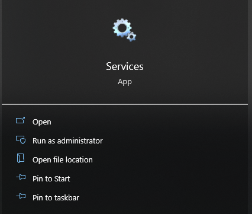
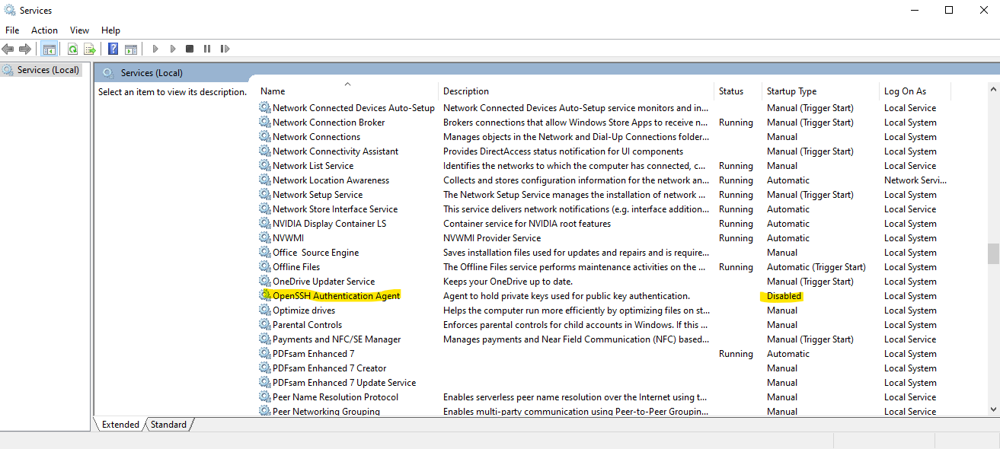
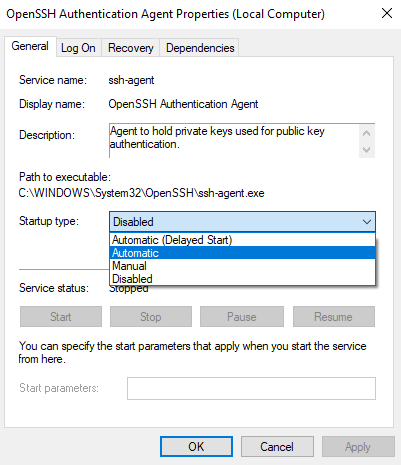

GitHub Integration
This section describes the steps necessary to set up GitHub integration on your work machine, including installing git, generating an SSH key, connecting to the Grants Pass code repository, and troubleshooting connection errors. Using GitHub commands to save and merge code changes is fairly straightforward, and the familiarity that comes with daily or weekly use will make them second nature. However, the process of installing git and setting up a new user only occurs when setting up a new computer or welcoming a new member to the team, so although the process can be more involved and less familiar, it is a one-time cost that does not impact normal daily development.
Install git
git is the software that manages version control on your local machine, and so to integrate with GitHub online, git must be installed locally. The winget and chocolatey package managers can both help you install git, but it is also available as a stand-alone package installer. Feel free to use the default installation directory and other settings on the install wizard. git is a fully-featured software designed to handle much more complex code bases than the GIS packages developed at the City, and so we will we only be using a subset of its available functionality, but if you are curious you can read more about it in the Pro Git book.
To ensure that git is installed correctly on your machine, use the command:
git --version
# output: git version X.Y.Z
From the chapter on First-Time Git Setup, there are a couple setup commands that we need to run on a fresh install to register the user account that we will be using to interact with the Grants Pass code repository on GitHub. From the terminal, run the following commands:
git config --global user.name "grantspassoregon"
git config --global user.email "GIS@grantspassoregon.gov"
Connecting to GitHub with SSH
The GIS office uses SSH deploy keys to manage access to the GitHub repository. The instructions here are a summary of the content on the Connecting to GitHub with SSH page, and describe process for generating a private-public key pair and registering the new public key on GitHub.
Check for an existing SSH key
The use case for this document is for new users, or existing users moving to a new machine, so it is not likely that there are already existing SSH keys available for use. However, this is how to check and make sure:
-
Open Git Bash. Git Bash is a terminal application installed with
git. If you press the Windows key and type "Git Bash" into the search bar, the app should appear under the "Best Match" heading, and you can click on the icon to open it, or select the "Open" option in the app description pane. -
Enter
ls -al ~/.sshto see if existing keys are present.ls -al ~/.ssh # Lists the files in your .ssh directory, if they exist -
Check the directory listing to see if you already have a public SSH key. GitHub supports the following filenames for public keys:
- id_rsa.pub
- id_ecdsa.pub
- id_ed25519.pub
-
Either generate a new SSH key or upload an existing key.
- If one or more keys already exist, you do not have to use them and can generate a new key.
- You can elect to add an existing key to the ssh-agent and use it to connect to GitHub as well.
- If an existing key is not present, follow the instructions below to create a new key.
Generating a new SSH key
These are the instructions to generate a new SSH key on your local machine. After generating the key, you can add the key to the repository account on GitHub to enable authentication for git operations over SSH.
-
Open Git Bash.
-
Enter the following command:
ssh-keygen -t ed25519 -C "GIS@grantspassoregon.gov"You can also use your individual work email as the label for the key. The response from the terminal should read:
Generating public/private ed25519 key pair.The system will then prompt you to "Enter a file in which to save the key", and you can press Enter to accept the default location. The GitHub instructions note that if there is an existing key under the same name, the system will ask if you want to overwrite the old key, and in this case recommends that you assign the new key a custom name instead by entering the default file location and replacing id_ed25519 with your custom key name.
Enter a file in which to save the key (C:/users/username/.ssh/id_ed25519): [Press Enter] -
When the system prompts you to enter a passphrase, type in a secure password to use for the key:
Enter passphrase (empty for no passphrase): [Type a passphrase] Enter same passphrase again: [Type passphrase again]
Adding the SSH key to the ssh-agent
-
Open Git Bash.
-
Manually start the ssh-agent.
# start the ssh-agent in the background $ eval "$(ssh-agent -s)" > Agent pid 59566- The
evalcommand is not valid in Powershell, but will work in Git Bash.
- The
-
Add the SSH private key to the ssh-agent.
-
If your key has a unique name, replace id_ed25519 in the command with the unique key name.
ssh-add ~/.ssh/id_ed25519
Add the SSH key to the Grants Pass GitHub account
Adding the public key to GitHub.com enables SSH access to the Grants Pass repository.
-
Copy the SSH key to the clipboard.
# copies the contents of the id_ed25519.pub file to the clipboard clip < ~/.ssh/id_ed25519.pub- The
<operator is not valid in Powershell, but will work in Git Bash. - If
clipis not working, open the file id_ed25519.pub in a text editor and copy it into the clipboard manually.
- The
-
In a web browser, log into GitHub.com as the user grantspassoregon, click the profile photo, then click Settings.
-
In the "Access" section of the sidebar, click SSH and GPG keys.
-
Click New SSH key or Add SSH key.
-
In the "Title" field, add a descriptive label for the new key, for instance a job role ("Technician").
-
Select "authentication" as the type of key.
-
Paste the public key from the clipboard into the "Key" field.
-
Click Add SSH key.
- If prompted, confirm access to the account on GitHub.
Test the SSH connection
This step confirms that the SSH key has been successfully added to GitHub.
-
Open Git Bash.
-
Connect to GitHub using the following command:
# Attempts to open ssh connection to GitHub ssh -T git@github.com- The first time running, this command should return a warning:
> The authenticity of host 'github.com (IP ADDRESS) can't be established. > ECDSA key fingerprint is SHA256:p2QAMXNIC1TJYWeIOttrVc98/R1BUFWu3/LiyKgUfQM. > Are you sure you want to continue connecting (yes/no)?- Type
yesto accept the connection. The fingerprint should match GitHub's public key fingerprint. - The remote command should exit with code 1.
- The resulting message should contain the username grantspassoregon:
> Hi grantspassoregon! You've successfully authenticated, but GitHub does not > provide shell access.
Troubleshooting GitHub Authentication
If the authentication process fails, it may result in the following error:
> Permission denied (publickey).
In this case, the GitHub docs provide the following guidance:
- Make sure you are not logged into Git Bash as an administrator. Git is not designed to be used with elevated privileges. You should be logged in with your user account both to create the SSH key and when logging into GitHub.
- Confirm that you are connecting to port 22 (the SSH port) on GitHub:
# test GitHub connection with verbose output
$ ssh -vT git@github.com
> OpenSSH_for_Windows_8.1p1, LibreSSL 3.0.2
> debug1: Connecting to github.com [IP ADDRESS] port 22.
> debug1: Connection established.
- If you have mistyped "git@github.com" the connection will fail.
- Make sure you are opening a connection to the "git" user. If you try to connect with your GitHub username, it will fail:
# will not work
$ ssh -T grantspassoregon@github.com
> Permission denied (publickey).
# will work
$ ssh -T git@github.com
> Hi grantspassoregon! You've successfully authenticated...
-
Check that your key is loaded into SSH:
- Using Git Bash, turn on the ssh-agent using the following command:
# start the ssh-agent in the background $ eval "$(ssh-agent -s)" > Agent pid 1445- Verify the private key is generated and loaded:
ssh-add -l -E sha256 > 256 SHA256:aVWpUNY8xC0f+0wLBLA3mJ1JWRNjIVaXZhTdX4ONO2Q GIS@grantspassoregon.gov (ED25519)If the ssh-add command does not print out a long string of numbers and letters, this indicates you either need to generate a new key or associate an existing key with GitHub.
-
Check that the OpenSSH Authentication Agent service is running:
- Open the Windows start menu by pressing the Windows key or clicking on the desktop search bar.
- Type "Services" and select the Services app. 
- Scroll to locate the OpenSSH Authentication Agent service. 
- If the service is disabled, enable it by double-clicking on the services, and selecting "Automatic" from the Startup type field. 